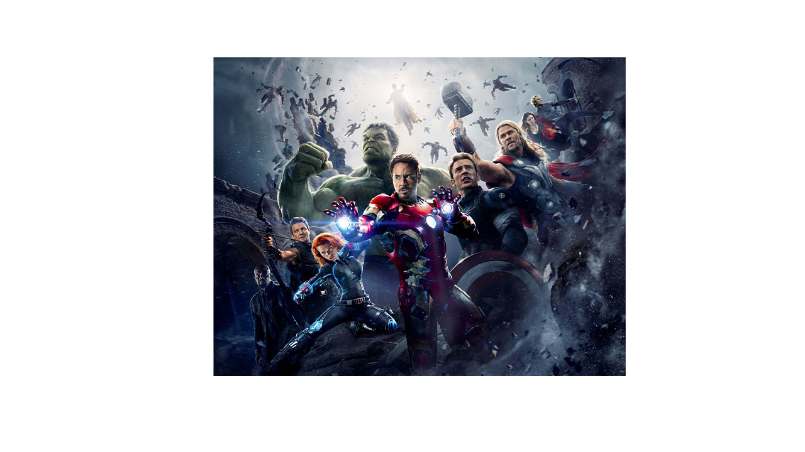

The Avengers
Who are the Avengers? How were the Avengers created?
Do the Avengers need to be better kept in check or are they fulfilling
their job successfully?
The Avengers are a group of superheroes who use their strength and power
to save cities, people, and even the world from evil forces trying to destroy them.
Their group was formed by Nick Fury, who worked for SHIELD. The Avengers tended to fight
against aliens, the most well-known of which was Thanos, who, at first, succeeded in wiping
out one third of the population, until the Avengers were able to regroup and defeat him.

There is much controversy over whether or not the Avengers should be better kept in check.
This was first addressed when Marvel produced the Captain America: Civil War movie. In this movie,
the Avengers became divided because some agreed to sign the Sokovia Accords, causing the Avengers to be
more restricted in their actions and decisions, while others refused. The two sides, Captain America versus
Iron Man, have valid points to their arguments. Captain America argues that, if they sign the Accords,
they will no longer have the liberty to freely choose to go help someone, and they may be hindered from intervening
when needed, and they could be used for evil, by those controlling them. However, Iron Man is grieved by all the deaths
they have inadvertantly caused, and he thinks that the Avengers do need to be kept in check. For more insight
into this argument, here is a link to an article about this argument.